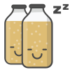

Instructions
Since early times beer has played an important role in our society. It brings people together in local pubs and breweries generating camaraderie within communities. As technology has progressed, brewing techniques have been developed and refined. As a result, we are currently consuming the finest beers ever produced. This is due to our increased knowledge in the fields of biotechnology, microbiology, and chemistry.
Step 1.
Steeping the Barley
In this step the grains are rinsed with hot water in order to extract the rest of the sugar out of them. The grains are then separated from the hot liquid in a process known as lautering. Breweries perform these steps in a vessel known as the lauter tun, but homebrewers typically mash, sparge, and lauter all in the same vessel.
The liquid is now known as wort (pronounced “wert”). Since the wort will shortly become beer, it is sent to another tank for the final brewing steps. The grains are not needed anymore and are discarded.
Step 2.
Boiling the Hops
The wort is boiled in order to kill any micro-organisms. A typical boil process lasts about an hour. This is also where hops are added to the beer. Hops require boiling water in order to release their flavor components.
The stage in the boil when the hops are added makes a difference on the final characteristic of the beer. Hops added in the very beginning of the boil would have a different effect if they were added near the end.
Step 3.
Pitching the Yeast
After roughly an hour of boiling, the wort is rapidly cooled. The yeast needs to be added to the wort and if it is still very hot the heat will kill the yeast. That is why the wort is cooled down to a temperature that the yeast can handle. It is at this time that the brewer must be very careful attention to sanitation.
Because the wort is no longer at extreme temperatures, it is extremely susceptible to contamination from any micro-organisms that may be around. Once the wort is around 80 degrees, the yeast is added, or “pitched” as the brewer would say. This is the last step in the typical brew day.
Step 4.

Fermenting & Bottling
Even though most of the hard work is done on the brewers part, this step is especially crucial. During fermentation the hungry yeast consumes the sugars that were released and converts them into alcohol and carbon dioxide. The carbon dioxide is released into the air and the alcohol stays in the beer. This process usually takes 1-2 weeks.
If you were to consume it as-is, you would find it extremely flat and unappetizing. What is needs is carbonation. This is done by directly injecting carbon dioxide into the beer. Another carbonation method is to add a small amount of sugar to the bottles. The residual yeast left in the bottles will consume the sugar and naturally carbonate the liquid by releasing C02. And that's how you brew beer!